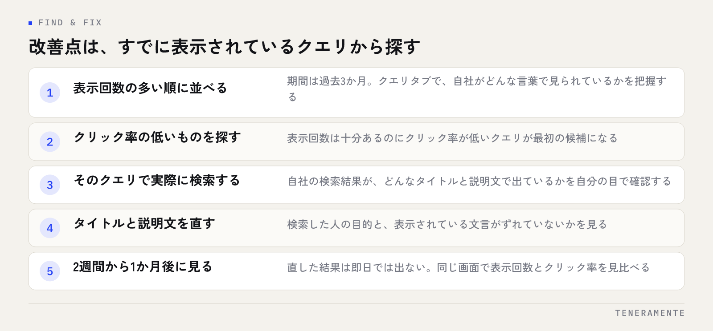

登録はしたものの、開いても数字が並んでいるだけで次の行動につながらない。Search Consoleでいちばん多いのはこの状態です。Search Consoleの使い方は、全機能を覚えることではなく、4つの画面だけを決まった順番で見ることから始まります。見る順番が決まれば、直すべきページは自然と浮かび上がります。
📌 この記事の結論
最初に見るのは検索パフォーマンス・ページ（インデックス）・エクスペリエンス・リンクの4つだけです。なかでも改善点が見つかるのは検索パフォーマンスで、「表示回数は多いのにクリック率が低いクエリ」から手をつけるのが最短です。順位そのものを追う画面ではありません。
01Search Consoleは「検索されたときに何が起きたか」を見る道具
Search Consoleは、Googleが無料で提供している、自社サイトと検索結果の関係を確認するための管理画面です。似た名前のアクセス解析ツールと混同されやすいのですが、見ている範囲が違います。
アクセス解析は、サイトに来てからの動きを記録します。どのページを見て、どこで離脱したか。対してSearch Consoleは、サイトに来る前に起きたことを記録します。どんな言葉で検索され、検索結果に何回表示され、そのうち何回クリックされたか。
この違いが分かると、使いどころもはっきりします。「問い合わせが増えない」原因がサイトの中にあるのか、そもそも検索結果でクリックされていないのか。後者を切り分けられるのがSearch Consoleです。なお、Googleマップ経由の表示はこの画面には出ません。地図からの見られ方は別の管理画面で確認します（MEO対策を自分でやる方法で扱っています）。登録（サイトの所有権確認）が済んでいない場合は、まずそこからになります。作業は初回だけで、以後は自動で記録が溜まっていきます。
02最初に見る4つの画面
画面は多いのですが、日常的に開くのは4つで足ります。
ひとつ目は検索パフォーマンス。検索された言葉ごとの表示回数・クリック数・クリック率・平均掲載順位が並びます。改善点のほとんどはここから見つかります。
ふたつ目はページ（インデックス作成）。Googleに登録されているページと、登録されていないページとその理由が分かります。登録されていないページは、どれだけ内容を直しても検索結果に出てきません。
みっつ目はエクスペリエンス（ページの機能性）。表示速度やスマホでの見やすさに問題のあるページが一覧になります。
よっつ目はリンク。外部からリンクされているページと、サイト内で多くリンクされているページが分かります。内部リンクの偏りを見る用途で使います。
最初の1か月は数字が少なくて当たり前
Search Consoleは、登録した日以降のデータだけを記録します。登録前のことは遡って表示されません。数字が少ないうちは焦って判断せず、まず記録が溜まるのを待ってください。目安として、判断に使えるようになるのは3か月分ほど溜まってからです。
03検索パフォーマンスの見方：4つの数字の関係
検索パフォーマンスの画面で最初にすることは、上部の「クリック数」「表示回数」「平均CTR」「平均掲載順位」の4つをすべて有効にすることです。既定ではクリック数と表示回数しか出ていないことがあります。
4つの数字は、次の関係で読みます。
- 表示回数：検索結果に出た回数。これが少ないなら、そもそも狙った言葉で出ていません
- クリック率（CTR）：表示回数のうちクリックされた割合。低いなら、出ているのに選ばれていません
- クリック数：表示回数とクリック率の掛け算。どちらを上げるかで打ち手が変わります
- 平均掲載順位：表示されたときの平均的な位置。参考値で、目標にはしません
大事なのは、表示回数とクリック率のどちらが弱いかで、直す場所が変わることです。表示回数が少ないのは内容と対象の言葉の問題。クリック率が低いのはタイトルと説明文の問題です。同じ「クリック数が少ない」でも、手を入れる場所がまったく違います。
04改善点を見つける手順
具体的な手順は次のとおりです。期間は「過去3か月」に設定し、下の表を「クエリ」タブで見ます。

- 表示回数の多い順に並べる。まず、自社サイトがどんな言葉で見られているかを把握します
- クリック率が低いものを探す。表示回数が十分あるのにクリック率が低いクエリが、最初の候補です
- そのクエリで実際に検索してみる。自社の検索結果が、どんなタイトルと説明文で出ているかを自分の目で確認します
- タイトルと説明文を直す。検索した人の目的と、表示されている文言がずれていないかを見ます
- 2週間から1か月後に同じ画面を見る。直した結果は即日では出ません
この手順のいいところは、すでに表示されているクエリから始める点です。ゼロから新しい言葉を狙うより、あと一歩でクリックされる状態にあるものを押し上げるほうが、結果が出るまでが短くなります。タイトルの直し方はタイトルタグの書き方、説明文はメタディスクリプションの書き方にそれぞれまとめています。
05「ページ」の画面で確認すること
検索パフォーマンスに数字が出ないページは、そもそも登録されていない可能性があります。「ページ」の画面を開き、「登録されていないページ」の理由を確認します。
よく出る理由は次のようなものです。
| 表示される理由 | 意味 | 対応 |
|---|---|---|
| クロール済み − インデックス未登録 | 見には来たが登録を保留された | 内容の薄さ・重複を見直す |
| 検出 − インデックス未登録 | URLは把握したがまだ見に来ていない | 内部リンクを足して待つ |
| 代替ページ（正規タグあり） | 別のページを正本と判断した | 意図どおりなら問題なし |
| noindex タグによって除外されました | 除外の指定が入っている | 意図しない指定なら外す |
注意したいのは、すべてを登録させる必要はないことです。検索から来てほしくないページ（フォームの送信完了ページなど）が除外されているのは正常な状態です。見るべきは「集客したいページが除外されていないか」の1点に絞ります。
「インデックス登録をリクエスト」を連打しない
URL検査の画面からは登録の申請ができますが、何度も押しても早くなりません。押すのは、ページを新しく公開したときと、内容を大きく直したときの1回で十分です。登録されない原因が内容側にある場合、申請では解決しません。
06見る頻度と、見ない数字
Search Consoleは毎日開く道具ではありません。データの反映に2〜3日かかるため、毎日見ても前日との違いは判断材料になりません。
| 見るもの | 頻度 | 画面 |
|---|---|---|
| クリック数・表示回数の推移 | 月1回 | 検索パフォーマンス（期間：過去3か月） |
| クリック率の低いクエリ | 月1回 | 検索パフォーマンス（クエリタブ） |
| 登録されていないページ | 月1回 | ページ（インデックス作成） |
| エラーの通知 | 届いたとき | メール通知 |
逆に、見なくてよい数字もあります。平均掲載順位の日々の上下です。この数字は、表示された検索結果すべての平均で、地域や検索した人の状況によって変わります。1日単位で追っても打ち手にはつながりません。
順位は結果の一部でしかありません。見るべきは、表示されているのに選ばれていないページです。
07よくある失敗
サイト全体の合計だけを見て終わるのが1つ目です。合計が横ばいでも、伸びているページと落ちているページが打ち消し合っていることがあります。必ずクエリ単位・ページ単位まで下りてください。
直した記録を残していないのが2つ目です。いつ、どのページの何を直したかを残しておかないと、数字が動いたときに原因が分かりません。日付とページと直した内容の3列だけのメモで十分です。
表示回数がゼロのクエリを探しに行くのが3つ目です。Search Consoleは、実際に表示された言葉しか記録しません。まだ表示されていない言葉の可能性を探すのは、SEOキーワードの選定の作業であって、この画面の役割ではありません。
アクセス解析とSearch Consoleは、両方入れる必要がありますか？
数字が急に下がったとき、まず何を確認すればよいですか？
複数のサイトや、サブドメインも登録できますか？
08まとめ：4つの画面を、月に1回の同じ順番で
Search Consoleの使い方は、4つの画面を決まった順番で見ることに尽きます。検索パフォーマンスで表示回数とクリック率の関係を見て、クリック率の低いクエリから直す。ページの画面で、集客したいページが登録されているかを確かめる。この2つを月に1回まわすだけで、直す対象は毎回見つかります。
覚えておきたいのは、この画面は順位を上げる道具ではなく、どこに手を入れるかを決める道具だということです。数字を眺めているだけでは何も変わりませんが、見る順番が決まっていれば、開いてから5分で次の作業が決まります。
TENERAMENTEでは、サイトを作ったあとに何を見て何を直すかまでを含めて設計しています。集客を前提としたサイトの考え方はホームページ・LP制作のページにまとめていますので、いまのサイトで何から手をつけるべきか整理したい場合は、お問い合わせよりお気軽にご相談ください。